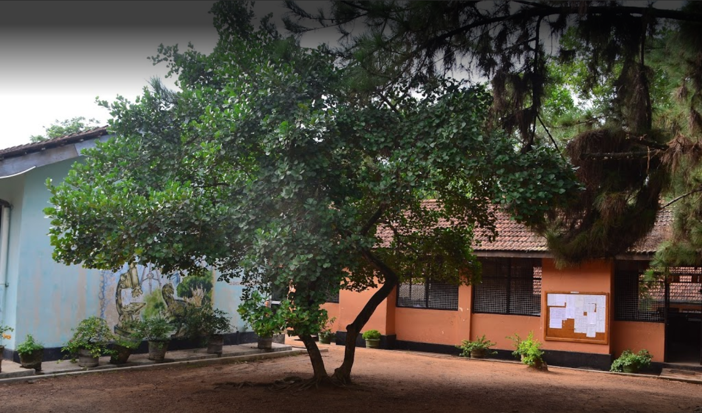
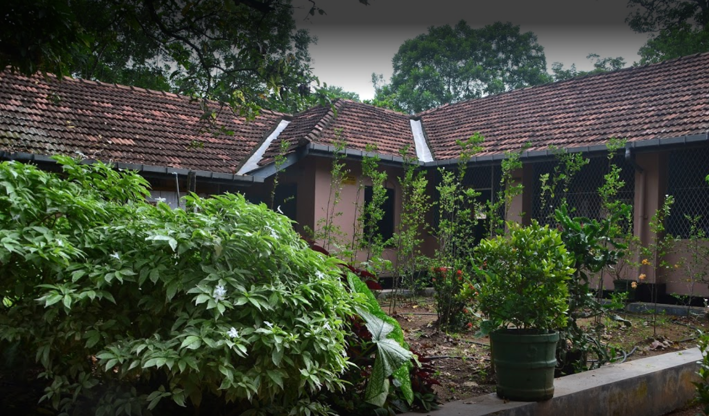
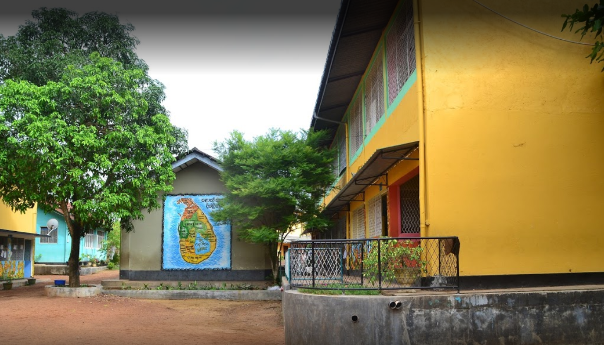
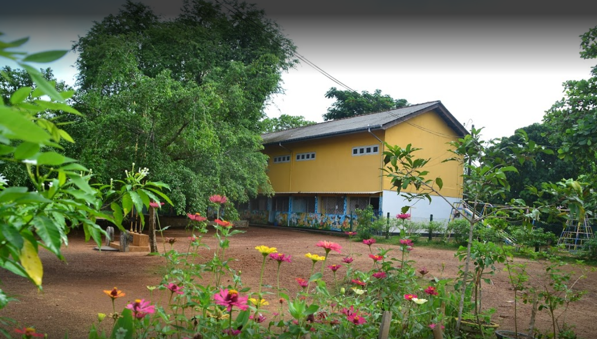
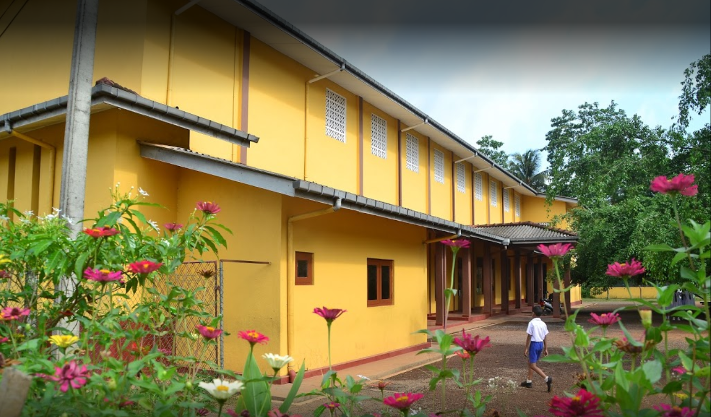

Bandaragama Central College
is an old school with a long history of 113 years
and one of the largest mixed school in Sri Lanka.
During this long journey Bandaragama Central College
has achieved several remarkable achievements.
According to the historical annals the school established with
only 4 students in 1900 as "Weedagama Ladies College".
In the year of 1922 a village nobleman of Bandaragama
D.H.R.W. Kannangara (Thalgaspitiye Ralahami),
donated a piece of land (2 Acres) to set up the present school.
During that time it was named as "Junior Ladies College,
Bandaragama". Mrs.D.B.W. Kannangara,
Mrs.D.C.D. Kulathunga, Mrs.W.P. Liyanage,
Mrs.T.G.K. Wijemanna served as the principals of the school earlier.
They were able to uplift the college as a one of the leading school.
The college was functioning as Central College since 1980.
Today the college known as Bandaragama Central College
and it is a National School.
The present principal Mr. P. R. Premasiri Perera
was appointed in 26th of November 2011.
As a result of his untiring and dedicated services
Bandaragama Central College
has got ability to compete with other leading schools in both
their educational as well as extra-curricular activities.
The college has now developed rapidly.
Today Bandaragama Central College provides Primary
and Secondary education for more than 3500 students
and is blessed with clever and hardworking academic staff.
This is the School I did my O/Ls and Primary Education.




